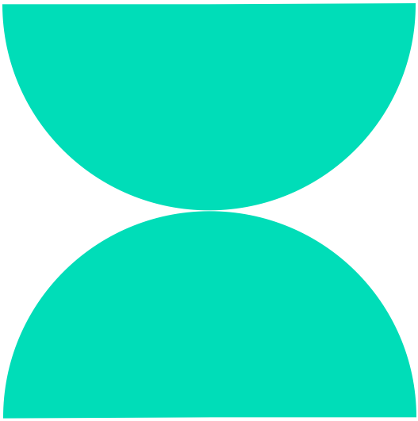

화면에 표시되는 내용이
두 번째 전 도형과 같은지 키보드로 판단해 주세요

다름 (둘다 아님)
같음 (2번째 전)
같음 (3번째 전)
3 |
화면에 제시되는 도형이 두번째 혹은 세번째 칸의 도형과 같은지 판단해주세요.
남은 문항 21
3
화면에 표시되는 내용이
두 번째 전 도형과 같은지 키보드로 판단해 주세요
다름 (둘다 아님)
같음 (2번째 전)
같음 (3번째 전)